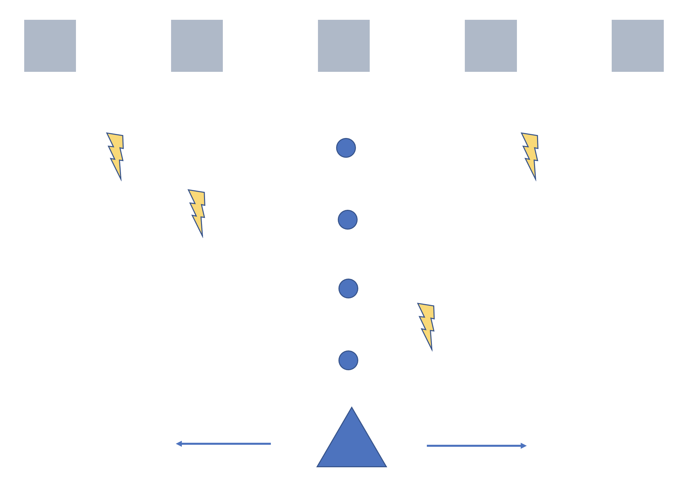

About Me
Hello~ Welcome to my site for NM2207!! I am a final year student pursuing Project and Facilities Management at the School of Design and Environment and minoring in CNM. I took this course to learn more about web design. Have fun exploring my site! :)
Week 10: Project Idea
I will be building my project using the challenge collisions tutorial. The overall idea is to achieve a game similar to space invaders. The main aim of the game is for players to attack incoming threats (represented by the squares). The player will use the left and right arrow keys to move and spacebar to shoot "bullets". If possible, I will like to incorporate more obstacles (represented by lightning) to make the game more challenging. The obstacles will be dropped randomly for the player to dodge. I also hope to incorporate some movement to the threats to make them harder to hit. The above is a rough sketch of the project idea.
Components I will need:
1. A shooter/player that moves left and right (triangle)
2. Bullets upon pressing spacebar (circle)
3. Removing the threats upon collision with bullet
4. Removing bullets upon collision with threats
5. Random obstacles dropping down (lightning)
6. Grid layout
7. A scoreboard
Challenges: In the challenge collisions tutorial, the shooter is stationary. I will have to figure how to move the shooter using the left and right keyboard arrows, as well as incorporate spacebar instead of listening to mouse clicks. I also have to ensure that the game ends when certain types of collision occurs. For the random obstacles, I will also have to figure out a way for them to “rain” down in a continuous manner.
Week 11: Project Update
This week I will be touching on some of my attempts. I tried to make the shooter movable. I made a rect for the shooter and managed to make it movable (left and right). I also learnt the different keydown numbers which represent the left, right and spacebar keys.The first challenge for me was thinking how to limit the shooter to only be visible within 0 to the canvas width. I realised that when I press left or right too long, the entire shooter goes out of the canvas. So I incorporated some if conditional statements just to make sure that the shooter remains visible.
I also need an array of threats for which I applied the structure learnt during tutorials. However, I am facing some difficulties with the firing of bullets from the shooter. This week, I hope to be able to work out the smooth & continuous firing of the bullet as well as the detection of collision for which the threats will be removed.
Check my feeble attempt here: Week 11 Project Update
Week 12: Project Update
At the moment, my code is a little messy because of all the trial and errors I did. I’d have to clear it up and comment/title my sections and subsections clearly. Some things that I tried to achieve this week include firing bullets continuously and moving the array of threats from left and right…In “storing” the array of bullets, I realise that I have been shifting the entire array around. Therefore, I was unable to fire a single bullet at one time when the spacebar is pressed. Upon some searching, I used Math.random() to call upon a random item from the array.
Moving forward, I’d be working on detecting collisions as well as introducing new rows of threats (??). For the detecting of collisions, I’d also have to think of how to remove that one threat from the array upon collision detection…
This week’s progress: Week 12 Project Update
Week 13: Project Update
This week I went to search on how to make rows and columns for my threats. Previously, it was only a row of threats moving left and right whenever they hit the edges. However, to make the game more challenging, it wanted to include rows and columns. Upon searching, I realise instead of representing the threats array by threats[j], once can also represent it using threats[j][k]. Specifically, I tried using:for (let j = 0; j < threatRows; j++) {
threats[j]=[];
for(let k = 0; k < threatColumns; k++){
threats[j][k] = paper.circle(j*80+80, k*60+60, 24);….
This allowed me to build an array of threats with specified rows and specified columns.
I also wanted to do collision detection this week. For every bullet one fires, I tried to incorporate collision detection using the similar “detectCollision” function taught in the tutorial. I also discovered I can call on threats[j][k].remove or threats[j][k].hide to remove the collided threats on screen. However, there were some complications.
Upon collision, I wanted both the fired bullet and the particular threat to disappear. First, I tried threats.hide() and bullets.remove(); however, I realise that if I hide the threats it is actually still present on screen. This will mean my bullets will continue colliding with it and disappear prematurely. This also means the upper threats will never get collided.
Then, I tried to remove the threats and bullets by using:
threats[j][k].remove();
bullets[randomNum].remove();
However, my code became very laggy. Also, I realise the more I fired bullets, the lesser bullets there are. At the end, I am unable to fire further bullets. Upon further thinking, I realise it doesn’t make sense if I use the .remove for the bullets as it means that I am removing all my bullets… Instead, I decided to use the .remove for threats only. For the bullets, I decided to create a function to teleport the bullets to another position upon collision, instead of .remove which removes them entirely.
Moving forward, I want to incorporate the timer. Also, I want to add more rules such that when the threats gradually reach the bottom of the screen, a game over notification will pop up. Other rules might include things like “you win” +time taken when user clears all the threats.
This week’s progress: Week 13 Project Update
Final Write-Up
This game was inspired by Space Invaders and the main aim of the game is for players to shoot the threats as soon as possible. Players will press on the spacebar to fire bullets, and shift left and right using the left and right key arrows.Thankfully, many interactions in this game were taught in tutorials. I build my game based on the challenge collisions, and array and sounds tutorial. Specifically, I used the detect collision function, Date.now() and the background sound applications from the tutorials in my game.
////Broad Discussion////
Movable Shooter: I created functions for moving the shooter left and right according to the left and right arrow keys and tapping on event listeners for keydown. This was rather interesting as we only managed to do mouseclick event listeners and not keydown.
Threats Array: I created a single row of threats array initially. However, I realised many of the space invaders games online actually consist of rows and columns. Therefore, I went to do an online search on how to create these multidimensional arrays… (if I’m not wrong I referred to this) and that was how I created an array of 8 columns and 5 rows, making up a total of threatRows*threatColumns = 40 threats. To make things more interesting, I also managed to use variables for detecting statuses and in turn making the threat array bounce off the side. In particular, I declared touchSide = false; and when the x.pos of threat array is more than dimX || <0, touchSide = true. And if touchSide was true, I made the array move in the opposite direction and also shift downwards.
Bullets Array: For the bullets, I build it up from the challenge collisions tutorial where we had to “spawn” the bullet from the shooter. However, in the tutorial, I was unable to spawn the bullets continuously (if I remembered correctly there was only one bullet). This meant that if I re-press my spacebar the previously spawned bullet will return to the original position. What I would have preferred was a continuous series of bullets. Therefore, I also created a bullet array. However, I ended up shooting the entire array together. Upon further thinking, I realise that I had to single out only one single element from the array. Therefore, I used Math.random()*bullet.length to help me spawn a single random bullet from the array. This way, I was also able to spawn bullets endlessly as long as one presses on the spacebar.
Collision Detection: For collision detection, I wanted to make the threat and bullet disappear upon collision. Therefore, I created another function to detect collision (similar to the tutorial). Then, within the draw function, I called the function to detect collision. If collision was detected, I teleported the bullet to another hidden position and removed the collided threat. I also included an if requirement such that when the threat array’s y.pos is more than shooter’s y.pos, clearInterval takes place and stops all the animation. This was so that I can incorporate the game over function and also pause the background sound.
End Game: To end the game, I tried to think of specific events which ensure that a player has successfully eliminated all the threats. I decided that I will end game upon detecting exactly 40 collisions, which is the total number of threats I have in the array. To do so, I incorporated a counter to count the number of collisions. Once counter >=40, I called the end game function. This counter proved to be very useful as I could use it in the confirm box as well, just to let players know the number of threats they had successfully eliminated out of 40.
Unfortunately, my threats.remove() gave me some complications. I realise that once I removed all my threats, I have no more threats to work with once the player restarts. This was why I tried to teleport my threats the same way I did with my bullets. However, I was unable to do so successfully. Due to time constraints, I decided to add “location.reload()” after the confirm box is checked so that the page refreshes and the threat array is still present upon every refresh.
Some additional elements were the inclusion of the background sound when the user clicks “START” which also signifies the start of the game, as well as the bump sound when a collision was detected.
Overall, I tried to make use of what I learnt from tutorials, homework and codealongs in this game. Above all, I have been exposed to html, css and javascript which has also allowed me to understand the works behind web design development much better.
Final Project here